🧭 1. Tổng quan điểm đến
Địa hình Hà Giang được kiến tạo qua hàng trăm triệu năm biến động vỏ Trái Đất, hình thành nên miền cảnh quan karst đá vôi tai mèo đen thẫm trùng điệp chiếm hơn 60% diện tích 4 huyện vùng cao: Quản Bạ, Yên Minh, Đồng Văn và Mèo Vạc. Nhưng giữa sự khắc nghiệt của đá, sự sống chưa bao giờ ngừng sinh sôi. Từng hốc đá cằn cỗi vẫn được đồng bào H'Mông kiên cường gieo mầm ngô xanh, từng vạt đồi vẫn bung nở rực rỡ sắc hồng tím của hoa tam giác mạch và trắng tinh khôi của hoa mơ, hoa mận mỗi độ xuân về.
Không chỉ sở hữu thiên nhiên ngoạn mục vô tiền khoáng hậu, Hà Giang còn là phên dậu thiêng liêng gìn giữ từng tấc đất biên cương của đất nước. Đứng trên đỉnh Long Sơn dưới bóng lá cờ đỏ sao vàng 54m² của Cột cờ Quốc gia Lũng Cú trông ra dải non sông điệp trùng, bất kỳ người con đất Việt nào cũng trào dâng niềm tự hào dân tộc thiêng liêng và sâu lắng.
📜 2. Vị trí địa lý & Dấu ấn lịch sử
Hà Giang là tỉnh miền núi biên giới cực Bắc Việt Nam, có tọa độ địa lý từ 22°10' đến 23°23' vĩ độ Bắc và từ 104°20' đến 105°35' kinh độ Đông. Phía bắc giáp nước Cộng hòa Nhân dân Trung Hoa với đường biên giới dài hơn 277km; phía đông giáp tỉnh Cao Bằng; phía nam giáp tỉnh Tuyên Quang; phía tây và tây nam giáp tỉnh Lào Cai và Yên Bái. Khí hậu Hà Giang mang tính chất á nhiệt đới vùng núi cao, mùa đông lạnh giá buốt giá có nơi xuất hiện băng tuyết, mùa hè mát mẻ dễ chịu.
⚖️ Căn cứ Pháp lý & Quyết định Xếp hạng Di sản Chính thống
Giá trị địa chất, lịch sử và văn hóa của Hà Giang được ghi nhận qua các công ước quốc tế và văn bản quy phạm pháp luật của Nhà nước Việt Nam:
- Công ước UNESCO & Mạng lưới Công viên Địa chất Toàn cầu (GGN - 03/10/2010): Tại Hy Lạp, Công viên Địa chất Cao nguyên đá Đồng Văn chính thức được UNESCO công nhận là Công viên Địa chất Toàn cầu đầu tiên của Việt Nam và thứ hai ở Đông Nam Á. Tiếp tục vượt qua các kỳ tái thẩm định nghiêm ngặt vào các năm 2014, 2018 và 2022.
- Quyết định số 1959/QĐ-TTg ngày 31/12/2019 của Thủ tướng Chính phủ: Xếp hạng Di tích quốc gia đặc biệt đối với Danh lam thắng cảnh Ruộng bậc thang Hoàng Su Phì (tại các xã Bản Luốc, Sán Sả Hồ, Bản Phùng, Hồ Thầu, Nậm Ty, Thông Nguyên).
- Quyết định số 411/QĐ-BVHTTDL ngày 16/11/2009 của Bộ Văn hóa, Thể thao và Du lịch: Xếp hạng Danh lam thắng cảnh quốc gia đối với Đèo Mã Pí Lèng - một trong "Tứ đại đỉnh đèo" lừng danh của miền Bắc.
- Quyết định số 937/QĐ-BT ngày 23/7/1993 của Bộ Văn hóa - Thông tin (nay là Bộ VHTTDL): Xếp hạng Di tích kiến trúc nghệ thuật quốc gia đối với Khu Dinh thự dòng họ Vương (Dinh Vua Mèo) tại thung lũng Sà Phìn, huyện Đồng Văn.
- Quyết định số 2050/QĐ-TTg của Thủ tướng Chính phủ: Phê duyệt Quy hoạch tổng thể phát triển Khu du lịch quốc gia Cao nguyên đá Đồng Văn, tỉnh Hà Giang đến năm 2025, tầm nhìn 2030.
Về dấu ấn lịch sử hào hùng, không thể không nhắc tới bản trường ca mở đường mang tên "Con đường Hạnh Phúc" (Quốc lộ 4C) nối từ thành phố Hà Giang qua 4 huyện vùng cao hiểm trở. Khởi công ngày 10/9/1959 và hoàn thành ngày 15/6/1965, con đường dài gần 200km được kiến tạo bởi hơn 1.200 dân công và thanh niên xung phong thuộc 16 dân tộc từ 8 tỉnh miền Bắc (Hà Giang, Tuyên Quang, Thái Nguyên, Cao Bằng, Bắc Kạn, Lạng Sơn, Hải Dương, Nam Định).
Đặc biệt tại đoạn qua Đèo Mã Pí Lèng - nơi vách đá dựng đứng hiểm trở như lưỡi rìu chém thẳng xuống vực sâu, một "Đội cảm tử" gồm 17 thanh niên dũng cảm đã tình nguyện treo mình giữa tầng không bằng dây thừng trên vách đá ròng rã suốt 11 tháng trời, đục từng lỗ mìn, nạy từng tảng đá để mở đường máu. Kỳ tích ấy đã biến cung đường tử thần thành dải lụa mềm vắt ngang mây trời, mang lại ánh sáng ấm no, hạnh phúc cho đồng bào các dân tộc vùng biên cương.
🏔️ 3. Huyền thoại & Truyền tích dân gian vùng đất
💚 Huyền thoại Núi Đôi Quản Bạ (Bầu vú nàng tiên Hoa Đào)
Chuyện xưa kể rằng, ở vùng đất Tam Sơn có một chàng trai người Mông khôi ngô tuấn tú, có tài thổi khèn Mông du dương réo rắt khiến chim trời ngừng bay, suối ngừng chảy. Tiếng khèn bay lên tận tiên giới, làm say đắm nàng tiên Hoa Đào xinh đẹp tuyệt trần. Nàng bèn trốn xuống trần gian nên duyên chồng vợ cùng chàng và sinh được một bé trai kháu khỉnh. Ngọc Hoàng phát hiện bèn sai thiên lôi bắt nàng về trời. Thương chồng một mình nuôi con thiếu bầu sữa mẹ, trước khi bay về mây, nàng đã để lại đôi nhũ hoa tròn trịa nuôi con khôn lớn. Đôi nhũ hoa ấy biến thành hai quả núi cân đối hình bầu vú mẹ giữa thung lũng, dòng sữa ngọt ngào thấm sâu vào lòng đất tạo nên thung lũng hoa trái bốn mùa trĩu quả ngọt lành.
🌸 Sự tích Hoa Tam Giác Mạch cứu đói bản làng
Đồng bào vùng cao lưu truyền câu chuyện cảm động về nguồn gốc loài hoa tam giác mạch. Năm ấy hạn hán kéo dài, lúa ngô trên nương rẫy đều khô héo, vụ đông giá buốt ập đến mang theo cơn đói khủng khiếp đe dọa các bản người Mông. Giữa lúc tuyệt vọng, bỗng dân làng ngửi thấy trong gió lạnh phảng phất mùi hương lạ thanh tao từ phía thung lũng đá xám. Mọi người lần theo mùi hương và ngỡ ngàng nhận ra giữa những khe đá cằn cỗi mọc lên bạt ngàn những mảng hoa tím phớt hồng, kết hạt hình tam giác nhỏ nhắn. Dân làng đem hạt về xay bột nặn bánh ăn thấy ngọt bùi, ấm bụng, giúp cả bản làng vượt qua mùa đông đói rét. Hạt lúa họ nhà lúa, mày ngô họ nhà ngô, lại có hình góc tam giác nên bà con trân trọng đặt tên là "Tam Giác Mạch".
🗡️ Huyền tích Vết kiếm Thần Sông tạo hẻm Tu Sản & Sông Nho Quế
Thuở hồng hoang khai thiên lập địa, quả núi Mã Pí Lèng và núi Săm Pun liền thành một dải đá khổng lồ vững chãi, chặn đứng nguồn nước thượng nguồn từ phương Bắc chảy về. Phía bên kia núi nước dâng ngập trắng đồng, còn phía bên này hạn hán nứt nẻ cỏ cây tàn lụi. Thần Núi ngủ say không hay biết, Thần Sông thấy dân chúng khốn cùng bèn rút thanh gươm báu sáng lòa, vung một nhát chém kinh thiên động địa xẻ đôi dãy núi đá vôi sừng sững. Vết chém ấy mở ra Hẻm vực Tu Sản sâu thẳm hun hút, dòng nước tuôn trào hóa thành con sông Nho Quế màu xanh ngọc bích uốn lượn mang nguồn sống trù phú về cho muôn loài.
🌸 4. Chuỗi hình ảnh 4 mùa du lịch
Hà Giang quanh năm là một bức tranh thiên nhiên tuyệt mỹ, mỗi mùa mang một sắc thái riêng biệt không trộn lẫn. Từ mùa hoa mơ đào xuân rực rỡ, mùa nước đổ óng ánh như gương đến mùa lúa chín vàng ươm và mùa hoa tam giác mạch huyền ảo giữa sương mây:
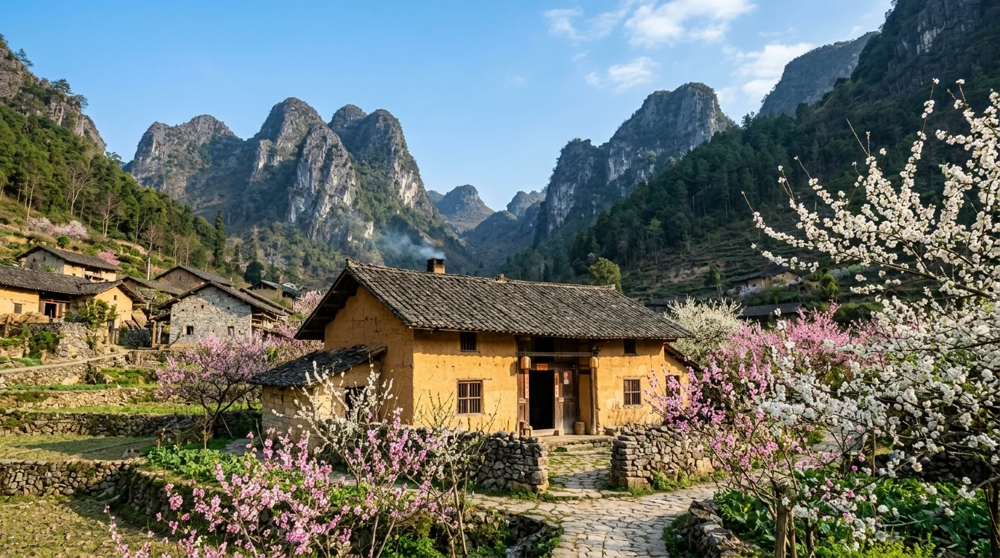
Tháng 1 - Tháng 3 • Mùa XuânMùa Xuân: Sắc Thắm Hoa Đào, Hoa Mận Bản Xa
Thời điểm: Tháng 1 đến hết tháng 3 Dương lịchKhi tiết trời se lạnh của mùa đông dần tan, cả cao nguyên đá như bừng tỉnh giấc nồng. Hoa đào phai cổ thụ, hoa mận trắng muốt nở bung bên hàng rào đá rêu phong, kết hợp cùng các lễ hội truyền thống như Lễ hội Gầu Tào, Chợ tình Khâu Vai rộn rã sắc màu thổ cẩm.
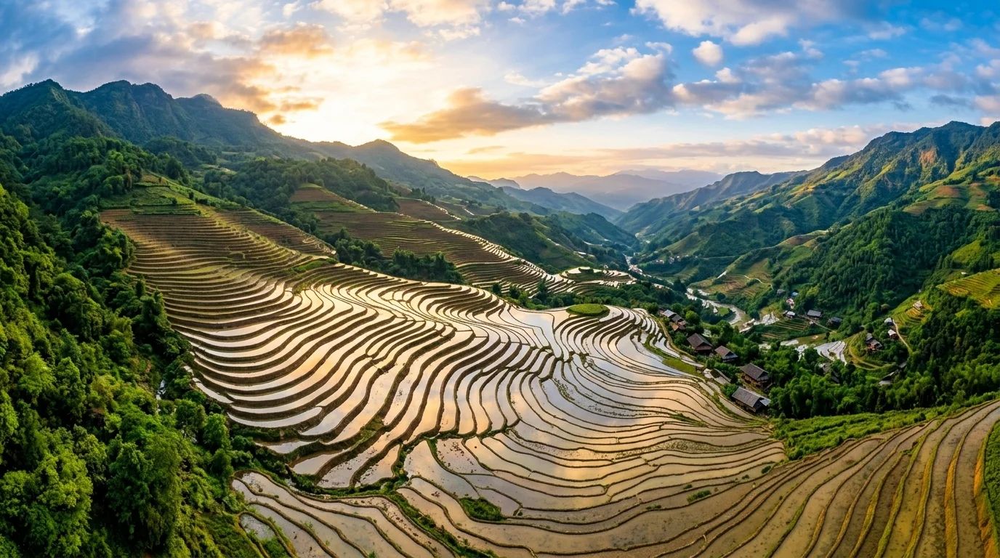
Tháng 5 - Tháng 6 • Mùa Nước ĐổMùa Hạ: Kỳ Quan Nước Đổ Hoàng Su Phì
Thời điểm: Tháng 5 đến tháng 6 Dương lịchKhi những cơn mưa rào đầu hạ tưới mát núi rừng, đồng bào La Chí, Dao đỏ, Nùng bắt đầu dẫn nước từ khe suối về ruộng bậc thang. Mặt nước lóng lánh phản chiếu mây trời, ánh bình minh và bóng dáng bà con cần mẫn cấy lúa tạo nên bức họa điêu khắc kỳ vĩ trên đất.
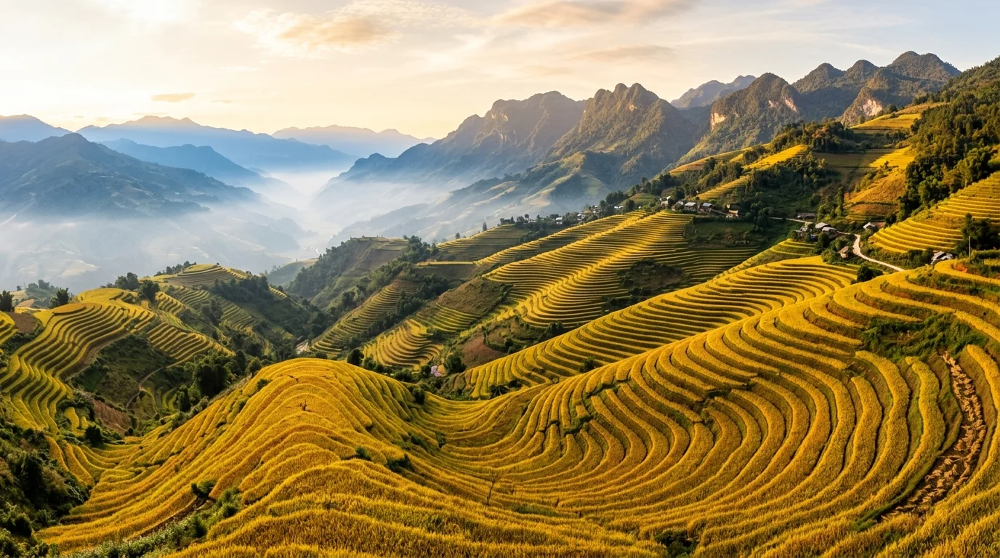
Tháng 9 - Tháng 10 • Mùa ThuMùa Thu: Biển Vàng Ruộng Bậc Thang Trĩu Hạt
Thời điểm: Giữa tháng 9 đến cuối tháng 10 Dương lịchHoàng Su Phì bước vào thời khắc rực rỡ nhất khi Di tích quốc gia đặc biệt ruộng bậc thang đồng loạt chuyển sang màu vàng óng ả. Thời tiết thu trong xanh, mát mẻ, trời cao vời vợi là thời điểm lý tưởng nhất cho những chuyến trekking săn ảnh mùa vàng.
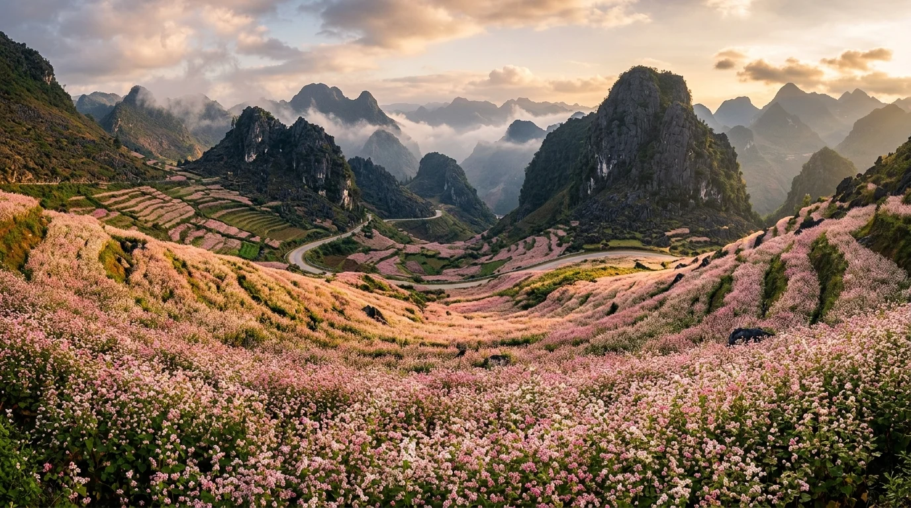
Tháng 10 - Tháng 12 • Mùa ĐôngMùa Đông: Tam Giác Mạch Nở Rộ & Biển Mây Đỉnh Đèo
Thời điểm: Tháng 10 đến hết tháng 12 Dương lịchMùa biểu tượng đặc sắc nhất của Hà Giang. Sắc hoa tam giác mạch chuyển biến diệu kỳ từ trắng tinh khôi sang hồng phấn rồi ánh tím thẫm kiêu hãnh trên nền đá tai mèo, cùng những buổi sớm mai săn mây bồng bềnh trên cung đèo Mã Pí Lèng huyền thoại.
📸 5. Top 10 Thắng cảnh biểu tượng & Dấu tích lịch sử
Khám phá trọn vẹn 10 tọa độ biểu tượng hùng vĩ và giàu giá trị di sản văn hóa nhất định phải đặt chân đến khi ghé thăm Hà Giang:
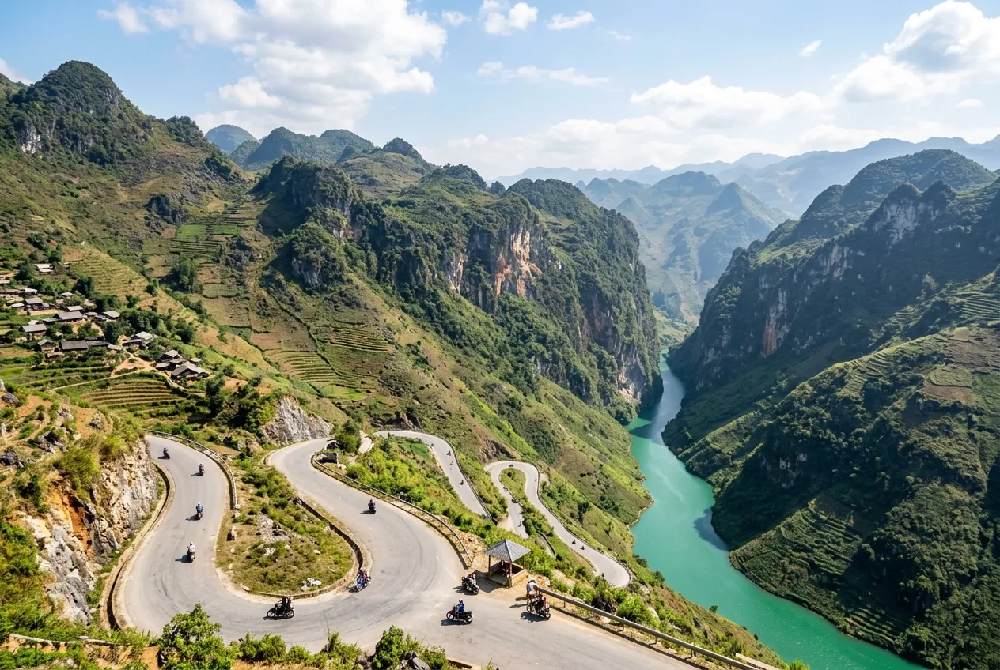
1. Đèo Mã Pí Lèng — Vua Của Các Con Đèo
Cung đèo hiểm trở bậc nhất Việt Nam với tầm nhìn ngoạn mục thu trọn hẻm vực Tu Sản sâu thẳm và dòng sông Nho Quế màu ngọc bích phía dưới.
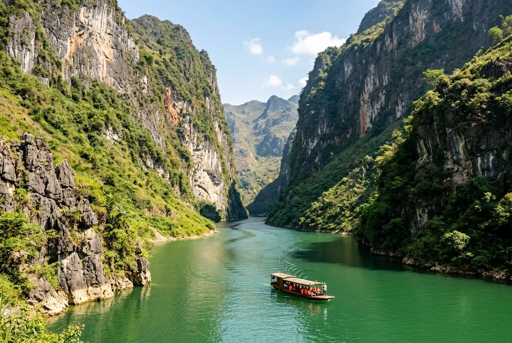
2. Sông Nho Quế & Hẻm Tu Sản
Trải nghiệm du thuyền lướt nhẹ trên dòng sông ngọc bích ngước nhìn vách đá Tu Sản sừng sững cao vút chạm mây xanh.
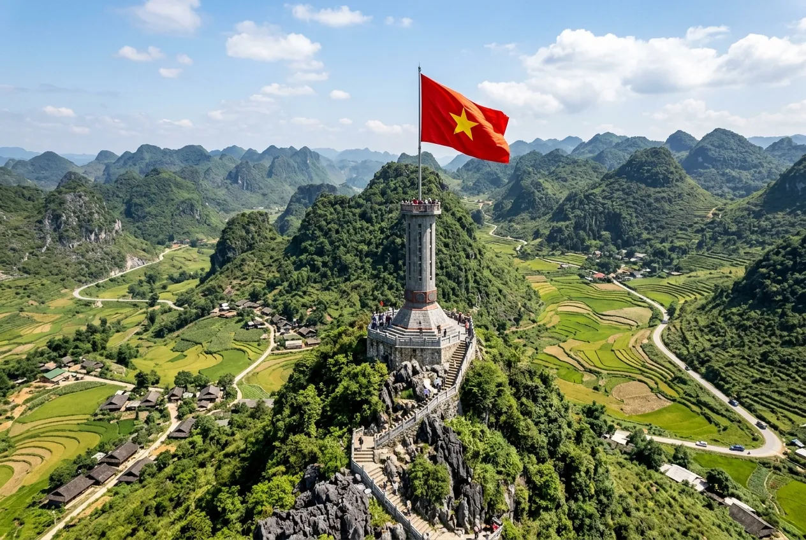
3. Cột Cờ Quốc Gia Lũng Cú
Biểu tượng thiêng liêng của chủ quyền biên cương đất nước, nơi mỗi người con đất Việt đều khát khao một lần được chạm tay vào.
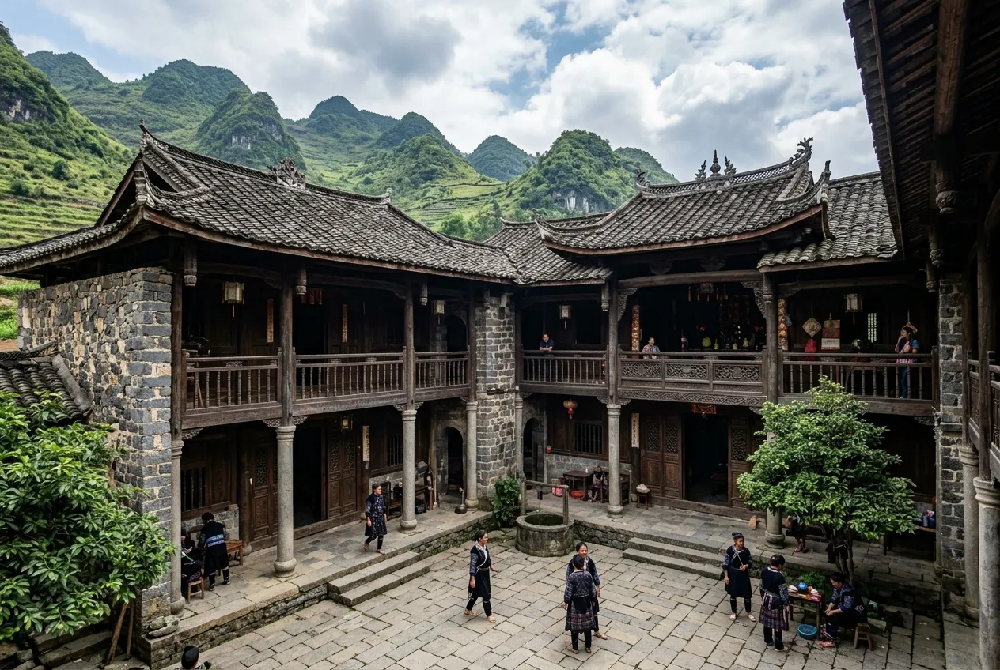
4. Dinh Thự Họ Vương — Trầm Tích Vua Mèo Sà Phìn
Quần thể pháo đài - tư gia uy nghiêm của Vương Chính Đức giữa thung lũng đá xám, minh chứng cho một thời kỳ lịch sử đặc biệt trên cao nguyên đá.
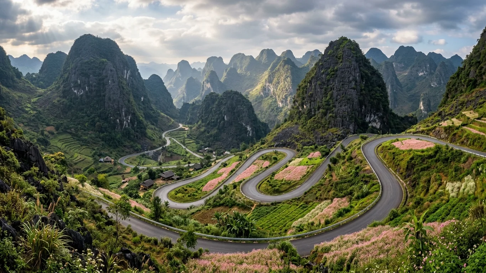
5. Dốc Thẩm Mã — Khúc Quanh Ngoạn Mục
Cung đèo 9 khúc uốn lượn tuyệt mỹ tựa dải lụa mềm vắt qua sườn núi đá vôi, biểu tượng thử thách tay lái phượt thủ.
6. Núi Đôi Quản Bạ — Cổng Trời
Kiệt tác thiên nhiên ban tặng cho thung lũng Tam Sơn, điểm dừng chân đầu tiên khi vượt qua con đèo Cổng Trời mờ sương.
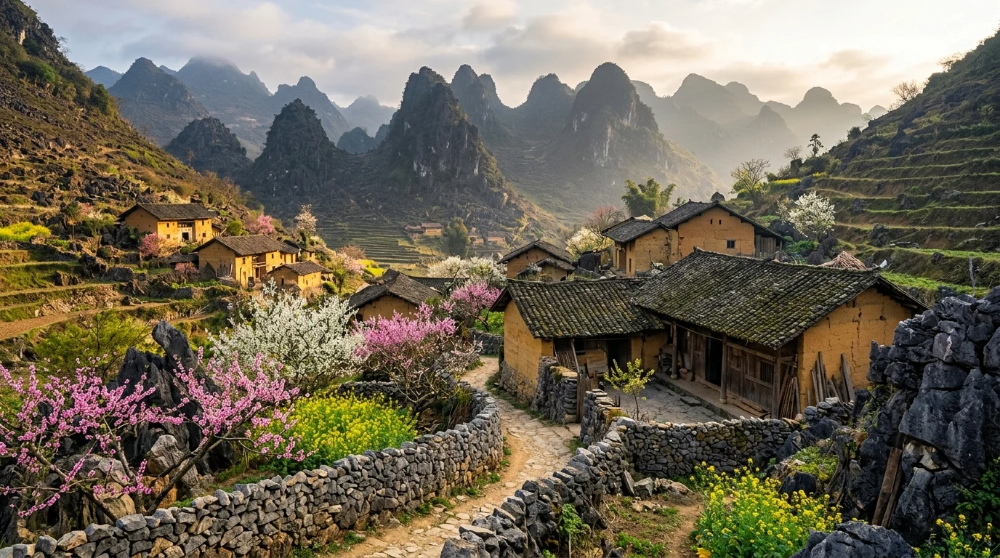
7. Bản Làng Cổ Lao Xa & Thung Lũng Sủng Là — Trầm Tích Đất & Bờ Rào Đá
Bản làng cổ tích nguyên sơ nép mình bên vách đá tai mèo với những nếp nhà trình tường đất nện vàng ươm, bờ rào đá xếp tay kỳ công, làng nghề chạm bạc gia truyền dòng họ Mua và mùa hoa đào phai nở rộ rực rỡ.
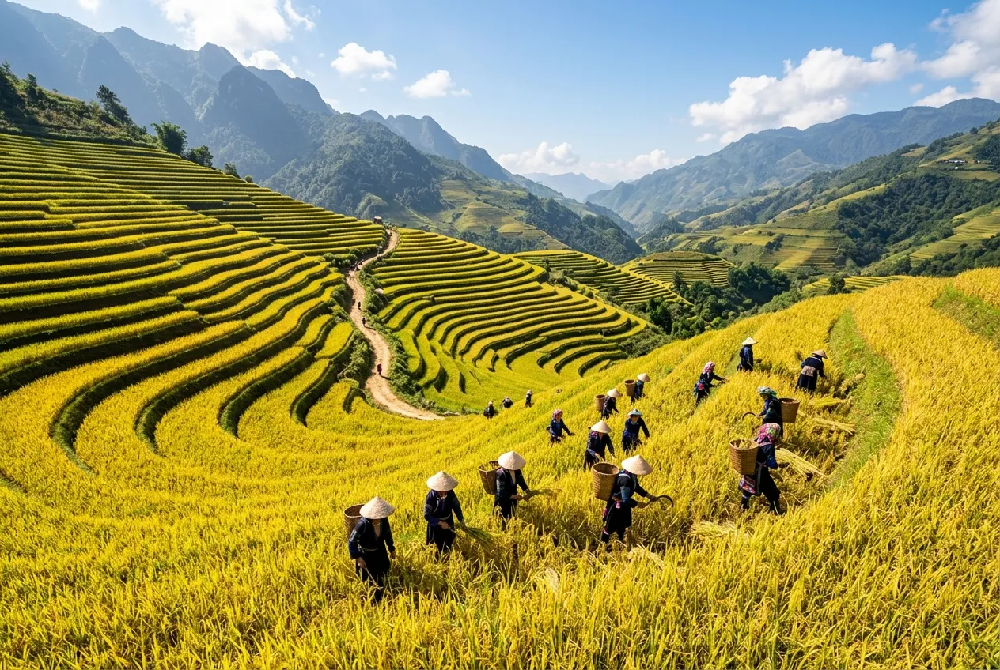
8. Ruộng Bậc Thang Hoàng Su Phì
Những nấc thang vươn tới trời mây uốn lượn kỳ vĩ, đẹp ngỡ ngàng trong mùa nước đổ và rực rỡ vàng óng mùa lúa chín.
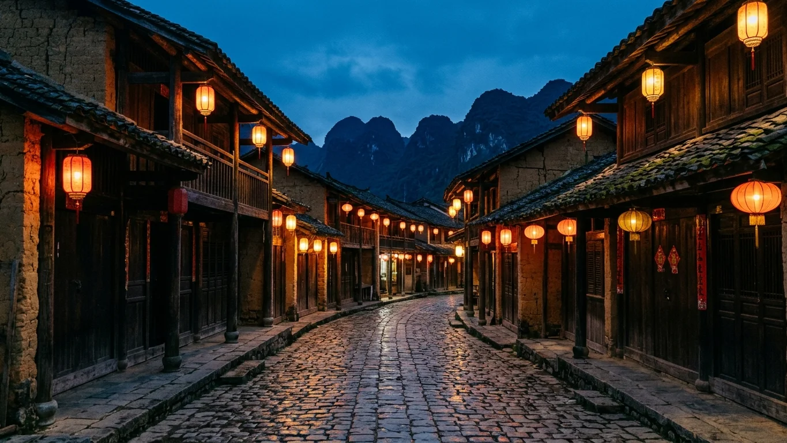
9. Phố Cổ Đồng Văn — Hồn Xưa Cao Nguyên
Trái tim giao thương sầm uất với những nếp nhà trình tường cổ kính lợp ngói âm dương rêu phong, nơi lưu giữ nhịp sống bình dị trăm năm.
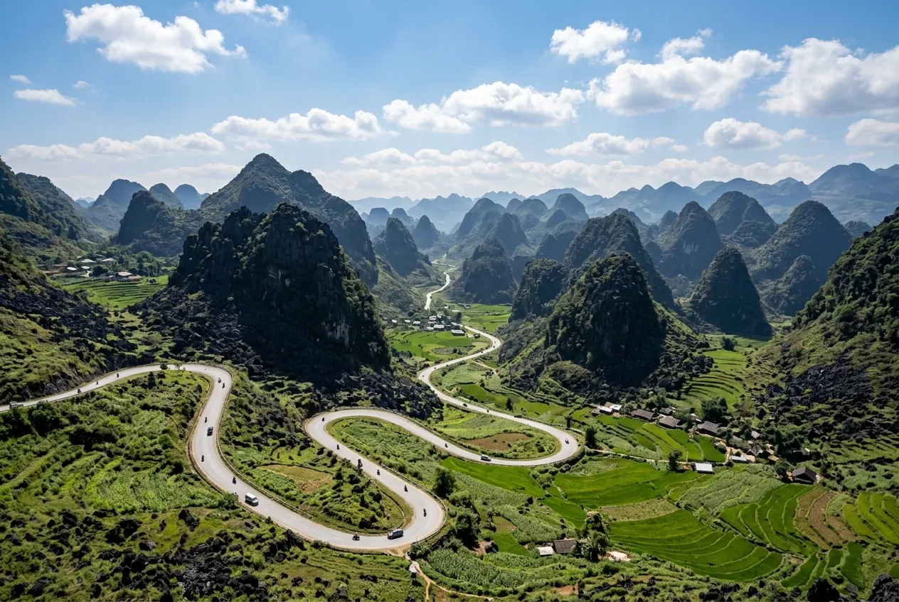
10. Cao Nguyên Đá Đồng Văn — Công Viên Địa Chất Toàn Cầu UNESCO
Vương quốc đá xám kỳ vĩ trải dài qua 4 huyện biên cương phía Bắc, nơi đá nở hoa, nơi trầm tích lịch sử hàng trăm triệu năm giao hòa cùng bản sắc văn hóa thiêng liêng của đồng bào các dân tộc vùng cao.
🚗 6. Cẩm nang di chuyển & Cung đường giao thông
Hà Giang cách trung tâm thủ đô Hà Nội khoảng 300km. Với việc thông tuyến cao tốc Tuyên Quang - Phú Thọ, thời gian di chuyển từ Hà Nội lên TP Hà Giang hiện nay đã được rút ngắn chỉ còn khoảng 5.5 - 6 giờ:
| Chặng di chuyển & Phương tiện | Thời gian dự kiến | Mức giá tham khảo | Lời khuyên & Lưu ý an toàn |
|---|---|---|---|
| Xe Limousine / Cabin VIP giường nằm (Hà Nội -> TP Hà Giang) | 5.5 - 6 giờ | 250.000 - 350.000 đ/vé | Nên chọn chuyến đêm (khởi hành 21h00 - 22h00 tại Mỹ Đình) để ngủ trên xe và có mặt tại TP Hà Giang lúc 04h00 sáng hôm sau. |
| Thuê xe máy số / xe cào cào (Tại TP Hà Giang đi cung đường đèo) | Chủ động 3 - 4 ngày | 150.000 - 450.000 đ/ngày | Xe số (Wave, Blade) từ 150k - 180k/ngày; Xe côn cào cào (XR150, CRF) từ 350k - 500k/ngày. Tuyệt đối không thuê xe ga đi đèo. |
| Tour xe máy Easy Rider (Bản địa chở) (Trọn gói 3N2Đ) | 3 Ngày 2 Đêm | 2.500.000 - 3.200.000 đ/người | Lựa chọn an toàn số 1 cho người tay lái yếu, không quen đổ đèo dốc sương mù. Các tay lái bản địa giàu kinh nghiệm phục vụ chu đáo. |
| Xe ô tô 7 chỗ / 16 chỗ có lái (Hà Nội lên trọn gói) | Toàn bộ lịch trình | 5.500.000 - 8.000.000 đ/chuyến | Phù hợp cho gia đình có người lớn tuổi và trẻ nhỏ. Cần chọn lái xe chuyên tuyến miền núi Tây Bắc quen đường cua tay áo. |
Cung đường phượt kinh điển QL4C (Con đường Hạnh Phúc):
- Chặng 1: TP Hà Giang -> Quản Bạ (46km): Vượt dốc Bắc Sum quanh co ngoạn mục lên Cổng trời Quản Bạ, ngắm Núi Đôi Cô Tiên và thung lũng Tam Sơn.
- Chặng 2: Quản Bạ -> Yên Minh -> Sủng Là (80km): Đi qua rừng thông Yên Minh xanh mát, chinh phục Dốc Cán Tỷ, Dốc Thẩm Mã vào thung lũng Sủng Là ghé thăm Nhà của Pao.
- Chặng 3: Sủng Là -> Sà Phìn -> Đồng Văn (35km): Ghé thăm Dinh thự dòng họ Vương (Vua Mèo), đi tiếp lên phố cổ Đồng Văn nghỉ đêm.
- Chặng 4: Đồng Văn -> Lũng Cú -> Đèo Mã Pí Lèng -> Mèo Vạc (50km): Chinh phục Cột cờ cực Bắc Lũng Cú, vượt Đèo Mã Pí Lèng ngắm hẻm Tu Sản, chèo thuyền sông Nho Quế.
🍲 7. Tinh hoa ẩm thực đặc sản
Ẩm thực vùng cao Hà Giang mang phong vị đậm đà, hoang dại của núi rừng đại ngàn. Giữa cái lạnh buốt giá của đá tai mèo, những món ăn nghi ngút khói thơm nồng nàn thảo quả, hạt dổi và chén rượu ngô men lá nồng ấm xua tan mọi mệt mỏi đường xa:
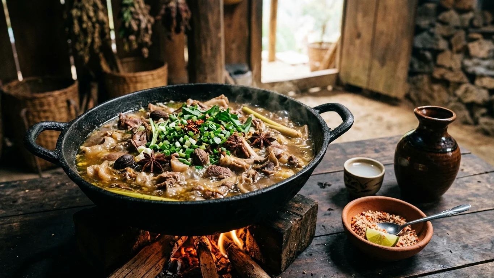
1. Thắng Cố Ngựa Đồng Văn
Món ăn linh hồn của người H'Mông tại các phiên chợ vùng cao. Miếng thịt ngựa giòn sần sật béo bùi quyện trong nước dùng thơm lừng gia vị rừng, chấm cùng bát muối ớt xanh cay xé lưỡi và nhấp chén rượu ngô men lá ấm nồng cả lồng ngực.
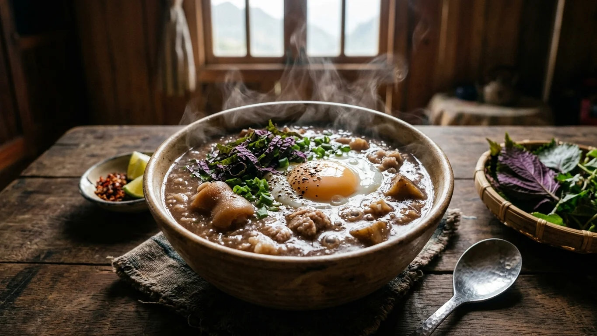
2. Cháo Ấu Tẩu — Thức Quà Đêm Giải Cảm
Được ví như vị thuốc bồi bổ xương khớp và xua tan mệt mỏi sau ngày dài vượt đèo dốc. Bát cháo thơm nồng hành hoa, lá tía tô thái sợi, rắc thêm chút tiêu đen cay ấm và quả trứng gà chần lòng đào béo ngậy làm ấm lòng lữ khách đêm đông.
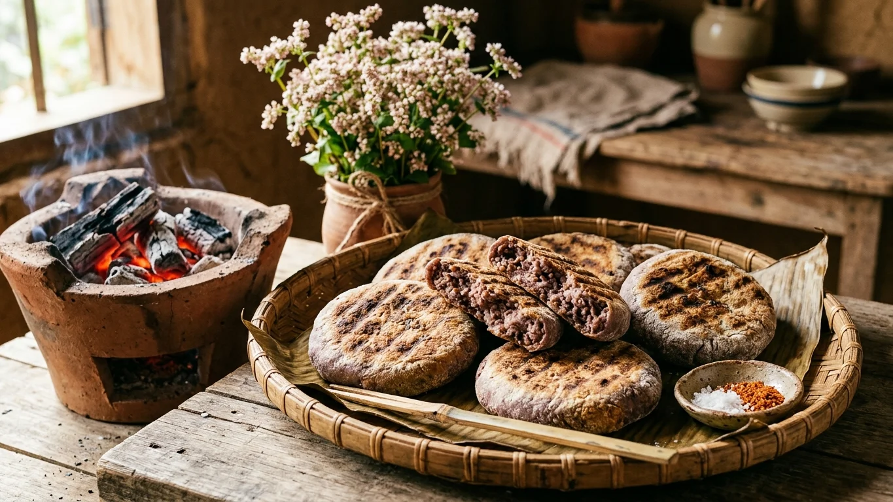
3. Bánh Tam Giác Mạch Nướng Than Hoa
Cầm trên tay chiếc bánh tam giác mạch nóng hổi vừa ra lò giữa tiết trời lạnh giá, cắn một miếng thấy vỏ ngoài giòn giòn, bên trong xốp mềm bùi bùi, phảng phất hương vị hăng ngái đặc trưng của hạt hoa vùng cao nguyên đá.
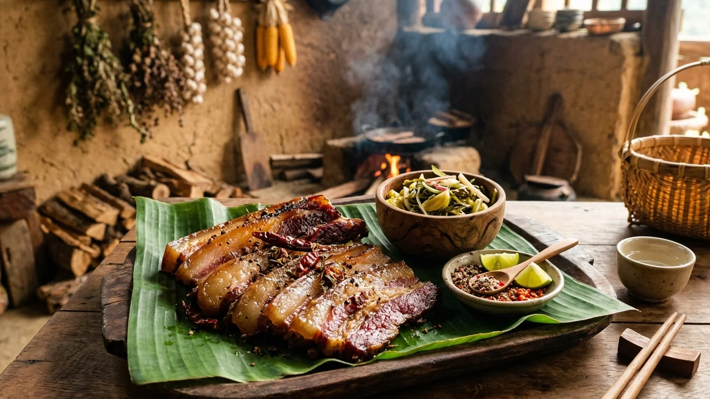
4. Thịt Lợn Đen Hun Khói Gác Bếp
Thịt lợn cắp nách nuôi tự nhiên ăn ngô khoai trên sườn núi nên thịt săn chắc vô cùng. Khi ăn đem xào với cải mèo đắng hoặc nướng than hoa chấm muối ớt chanh, tạo nên món nhắm kinh điển không thể thiếu bên vò rượu ngô bản địa.
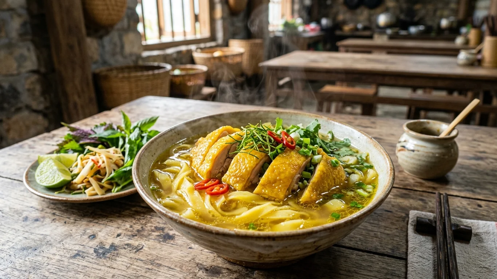
5. Phở Tráng Kìm Gà Đồi Quản Bạ
Bữa sáng truyền thống của người dân xã Đông Hà bên dòng sông Miện. Bát phở ngập tràn những miếng gà đồi chặt dày thịt dai ngọt, nước dùng thơm ngát mùi gừng núi và thảo mộc, húp một ngụm là thấy nguồn năng lượng tràn trề để sẵn sàng chinh phục đèo cao.
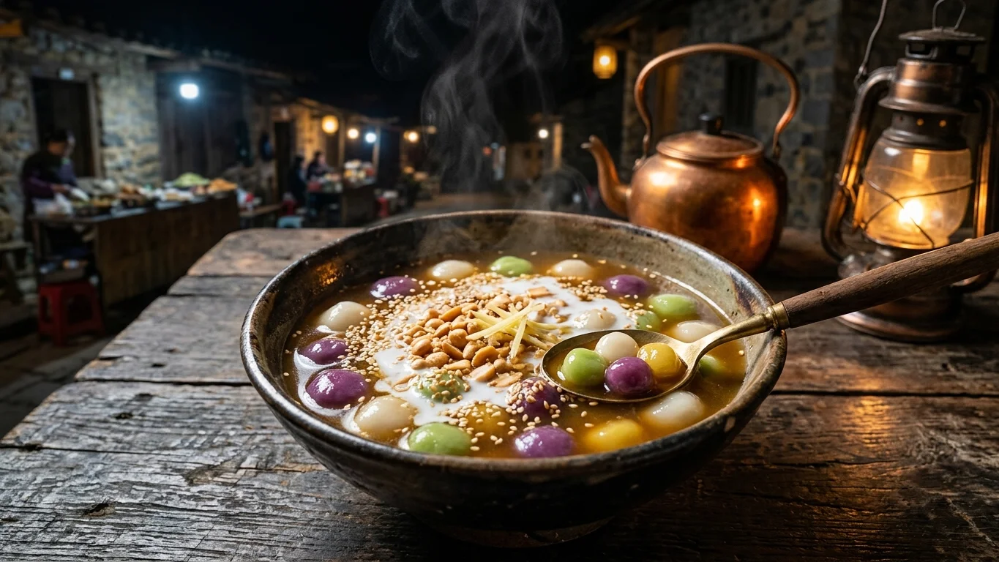
6. Thắng Dền Phố Cổ Đồng Văn
Ngồi bên hiên nhà cổ Đồng Văn giữa đêm đông lạnh buốt dưới 5 độ C, xì xụp bát thắng dền nóng hổi ấm sực cả người. Vị cay ấm nồng nàn của gừng già quyện cùng vị ngọt thanh của đường nâu và độ dẻo mềm của nếp nương tạo nên cảm xúc xao xuyến khó tả.
🎟️ 8. Bảng giá vé tham quan & Dịch vụ trải nghiệm niêm yết
Bảng giá vé tham quan thắng cảnh và dịch vụ du lịch niêm yết chính thức tại các điểm đến trọng điểm tỉnh Hà Giang (Cập nhật năm 2026):
| Điểm Tham Quan / Dịch Vụ | Mức Phí Niêm Yết | Đối Tượng Trẻ Em | Chi Tiết Quyền Lợi & Ghi Chú |
|---|---|---|---|
| Cột Cờ Quốc Gia Lũng Cú | 25.000 đ/người | 10.000 đ (Dưới 1m2) | Vé tham quan leo lên đỉnh Cột cờ. Dịch vụ xe điện trung chuyển từ bãi xe: 15.000 đ/lượt. |
| Khu Dinh Thự Họ Vương (Dinh Vua Mèo) | 30.000 đ/người | Miễn phí trẻ em | Bao gồm vé vào cổng tham quan toàn bộ 64 gian phòng pháo đài kiến trúc cổ Sà Phìn. |
| Làng Văn Hóa Lũng Cẩm & Nhà Của Pao | 10.000 đ/người | Miễn phí | Vé bảo tồn văn hóa làng cổ Sủng Là và tham quan khuôn viên ngôi nhà trình tường cổ. |
| Bản Làng Cổ Lao Xa (Xã Sủng Là) | Miễn phí tham quan | Miễn phí | Tự do dạo ngắm làng cổ, chụp ảnh bờ rào đá trăm năm, hoa đào phai và tham quan trải nghiệm xưởng đúc chạm bạc thủ công dòng họ Mua. |
| Du Thuyền Ngắm Hẻm Tu Sản — Sông Nho Quế | 120.000 đ/người | 60.000 đ (Dưới 1m2) | Hành trình thuyền máy ngắm hẻm Tu Sản 45 - 60 phút. Xe ôm trung chuyển bến thuyền: 100.000 đ khứ hồi. |
| Động Lùng Khúy (Quản Bạ) | 50.000 đ/người | 20.000 đ | "Đệ nhất động cao nguyên đá" với hệ thống thạch nhũ nguyên sinh kỳ ảo dài hơn 300m. |
| Chèo Thuyền Kayak / SUP Sông Nho Quế | 100.000 - 150.000 đ | Theo người lớn | Thuê thuyền tự chèo trải nghiệm mặt nước ngọc bích hẻm Tu Sản (kèm áo phao an toàn). |
| Cổng Trời Quản Bạ & Đèo Mã Pí Lèng | Miễn phí tham quan | Miễn phí | Tự do dừng chân vãn cảnh, chụp ảnh tại các điểm dừng chân công cộng trên đèo. |
🧭 9. Gợi ý lịch trình & Mẹo trải nghiệm bản địa an toàn
Cung đường Hà Giang có địa hình đèo dốc quanh co liên tục. Để chuyến đi vừa an toàn, trọn vẹn và không bị kiệt sức, GO FAR đề xuất lịch trình trải nghiệm tối ưu 3 Ngày 2 Đêm:
Lịch trình gợi ý 3N2Đ: "Bản Hùng Ca Cao Nguyên Đá — Chạm Đỉnh Lũng Cú"
Ngày 1: TP Hà Giang — Dốc Bắc Sum — Cổng Trời Quản Bạ — Rừng Thông Yên Minh — Đồng Văn
- 06h30: Nhận xe máy tại TP Hà Giang, ăn sáng phở chua hoặc bánh cuốn trứng nước canh.
- 08h00: Vượt dốc Bắc Sum, dừng chân ngắm Núi Đôi Quản Bạ tại Cổng Trời.
- 10h30: Ghé thăm cây nghiến cô đơn Cán Tỷ, ngắm thung lũng đá tai mèo kỳ vĩ.
- 12h30: Ăn trưa tại thị trấn Yên Minh, thưởng thức cơm lam gà đồi nướng.
- 14h00: Chinh phục Dốc Thẩm Mã huyền thoại, khám phá thung lũng Sủng Là: check-in Nhà của Pao (Lũng Cẩm) và rẽ vào bản làng cổ Lao Xa chiêm ngưỡng những nếp nhà trình tường rêu phong, bờ rào đá trăm năm và xưởng chạm bạc truyền thống dòng họ Mua.
- 16h30: Khám phá Dinh thự Vua Mèo họ Vương tại thung lũng Sà Phìn.
- 18h30: Nhận phòng homestay tại Phố cổ Đồng Văn, ăn tối lẩu gà đen hoặc thắng cố ngựa, thưởng thức bát thắng dền nóng hổi dạo phố cổ về đêm.
Ngày 2: Cột Cờ Lũng Cú — Đệ Nhất Đèo Mã Pí Lèng — Du Thuyền Sông Nho Quế — Mèo Vạc
- 07h00: Ăn sáng bánh cuốn Đồng Văn chấm nước hầm xương đậm đà.
- 08h30: Chạm tay vào lá cờ Tổ quốc trên đỉnh Cột cờ Lũng Cú và ghé thăm mốc điểm cực Bắc 428 thiêng liêng.
- 12h00: Ăn trưa tại Đồng Văn rồi khởi hành chinh phục đệ nhất hùng quan Đèo Mã Pí Lèng.
- 14h00: Đi xe ôm xuống bến thuyền Nho Quế, trải nghiệm du thuyền len qua hẻm Tu Sản sâu hun hút.
- 17h00: Vượt đèo về thị trấn Mèo Vạc hoặc Làng văn hóa du lịch cộng đồng Pả Vi nghỉ đêm, thưởng thức bữa cơm tối ấm cúng cùng đồng bào người Mông.
Ngày 3: Mèo Vạc — Cung Đường Chữ M — Du Già Hoặc Đường Cũ Về TP Hà Giang — Hà Nội
- 07h30: Đi dạo chợ phiên Mèo Vạc (nếu trúng Chủ nhật), mua sắm đặc sản mật ong bạc hà, thịt gác bếp.
- 09h00: Chinh phục cung đèo chữ M ngoạn mục, xuôi về thung lũng nguyên sơ Du Già tắm thác nước mát lành.
- 13h00: Ăn trưa tại Du Già rồi thong dong theo đường tỉnh 176 trở về TP Hà Giang.
- 17h30: Trả xe máy tại TP Hà Giang, ăn tối thưởng thức bát cháo ấu tẩu nóng hổi giải mỏi.
- 20h30: Lên xe cabin VIP giường nằm êm ái trở về thủ đô Hà Nội, kết thúc chuyến phượt để đời.
Mẹo an toàn sống còn khi đi đèo dốc Hà Giang:
- Quy tắc đổ đèo bằng số thấp: "Lên dốc số nào thì xuống dốc số đó" (chủ yếu dùng số 1 và số 2). Tuyệt đối không âm côn, không về mo (số 0) và không bóp phanh liên tục để tránh cháy má phanh gây mất phanh nguy hiểm tính mạng.
- Không đi xe tay ga: Địa hình đèo dốc Hà Giang có độ dốc trung bình 10 - 14% với hàng trăm khúc cua tay áo khuất tầm nhìn, xe tay ga không có phanh động cơ số nên cực kỳ nguy hiểm. Luôn chọn xe số hoặc xe côn tay.
- Quy tắc lái xe trong sương mù: Mùa đông và mùa xuân thường xuyên có sương mù dày đặc che khuất tầm nhìn dưới 5 mét trên đèo Mã Pí Lèng và Cổng trời. Luôn bật đèn pha sương, bóp còi cảnh báo trước khi vào cua và giữ khoảng cách an toàn.
- Tôn trọng văn hóa bản địa: Không chụp ảnh xoa đầu trẻ em vùng cao, không tự ý cho tiền trẻ em bên đường (nên tặng sách vở, bánh kẹo), xin phép người dân trước khi chụp ảnh chân dung và ăn mặc lịch sự khi ghé thăm các di tích văn hóa.